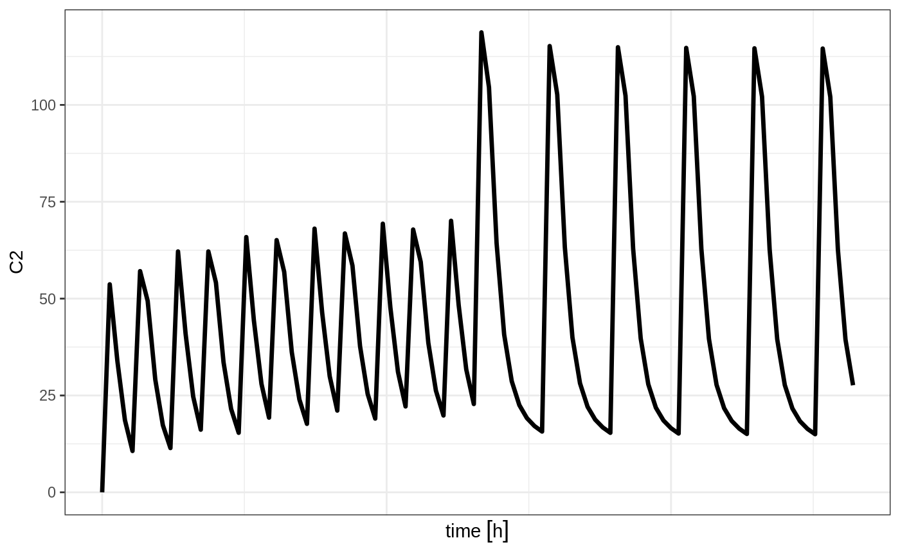
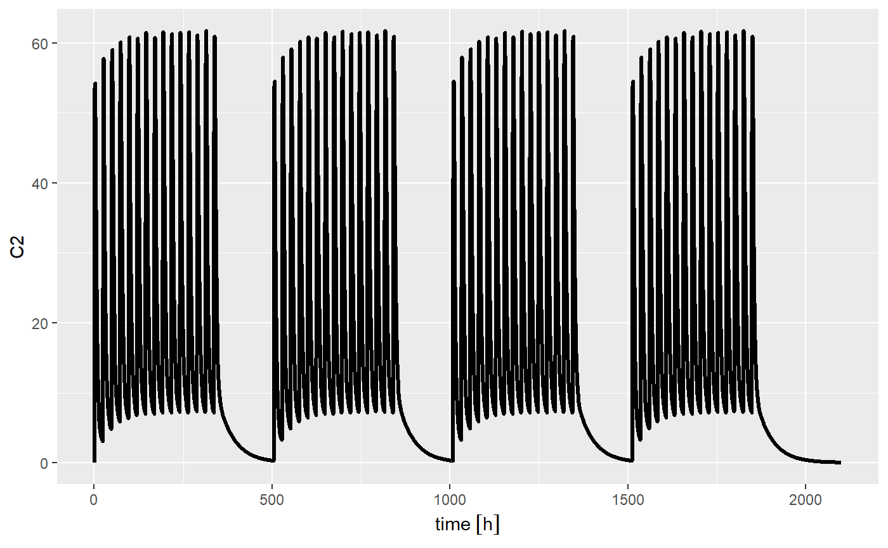

Combining event tables
etRbind.RdCombining event tables
etRbind(..., samples = c("use", "clear"), waitII = c("smart", "+ii"), id = c("merge", "unique")) # S3 method for rxEt rbind(..., deparse.level = 1)
Arguments
| ... | The event tables and optionally time between event tables, called waiting times in this help document. |
|---|---|
| samples | How to handle samples when repeating an event table. The options are:
|
| waitII | This determines how waiting times between events are handled. The options are:
|
| id | This is how rbind will handle IDs. There are two different types of options:
|
| deparse.level | The |
Value
An event table
References
Wang W, Hallow K, James D (2015). "A Tutorial on RxODE: Simulating Differential Equation Pharmacometric Models in R." CPT: Pharmacometrics \& Systems Pharmacology, 5(1), 3-10. ISSN 2163-8306, <URL: http://www.ncbi.nlm.nih.gov/pmc/articles/PMC4728294/>.
See also
eventTable, add.sampling,
add.dosing, et,
etRep, etRbind,
RxODE
Examples
## Model from RxODE tutorial mod1 <-RxODE({ KA=2.94E-01; CL=1.86E+01; V2=4.02E+01; Q=1.05E+01; V3=2.97E+02; Kin=1; Kout=1; EC50=200; C2 = centr/V2; C3 = peri/V3; d/dt(depot) =-KA*depot; d/dt(centr) = KA*depot - CL*C2 - Q*C2 + Q*C3; d/dt(peri) = Q*C2 - Q*C3; d/dt(eff) = Kin - Kout*(1-C2/(EC50+C2))*eff; }); ## These are making the more complex regimens of the RxODE tutorial ## bid for 5 days bid <- et(timeUnits="hr") %>% et(amt=10000,ii=12,until=set_units(5, "days")) ## qd for 5 days qd <- et(timeUnits="hr") %>% et(amt=20000,ii=24,until=set_units(5, "days")) ## bid for 5 days followed by qd for 5 days et <- seq(bid,qd) %>% et(seq(0,11*24,length.out=100)); bidQd <- rxSolve(mod1, et) plot(bidQd, C2)## Now Infusion for 5 days followed by oral for 5 days ## note you can dose to a named compartment instead of using the compartment number infusion <- et(timeUnits = "hr") %>% et(amt=10000, rate=5000, ii=24, until=set_units(5, "days"), cmt="centr") qd <- et(timeUnits = "hr") %>% et(amt=10000, ii=24, until=set_units(5, "days"), cmt="depot") et <- seq(infusion,qd) infusionQd <- rxSolve(mod1, et) plot(infusionQd, C2)## 2wk-on, 1wk-off qd <- et(timeUnits = "hr") %>% et(amt=10000, ii=24, until=set_units(2, "weeks"), cmt="depot") et <- seq(qd, set_units(1,"weeks"), qd) %>% add.sampling(set_units(seq(0, 5.5,by=0.005),weeks)) wkOnOff <- rxSolve(mod1, et) plot(wkOnOff, C2)## You can also repeat the cycle easily with the rep function qd <-et(timeUnits = "hr") %>% et(amt=10000, ii=24, until=set_units(2, "weeks"), cmt="depot") et <- etRep(qd, times=4, wait=set_units(1,"weeks")) %>% add.sampling(set_units(seq(0, 12.5,by=0.005),weeks)) repCycle4 <- rxSolve(mod1, et) plot(repCycle4, C2)